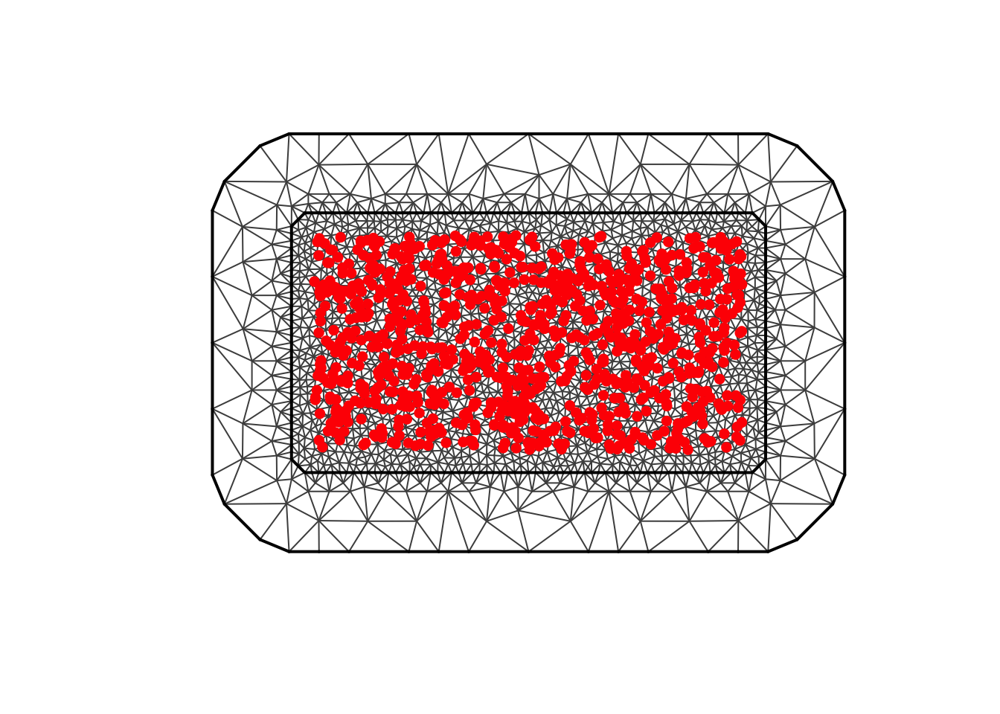
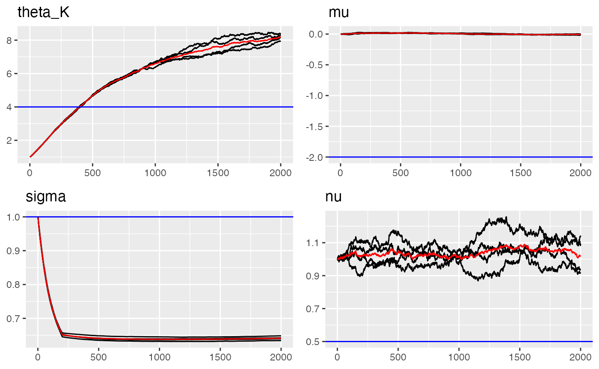
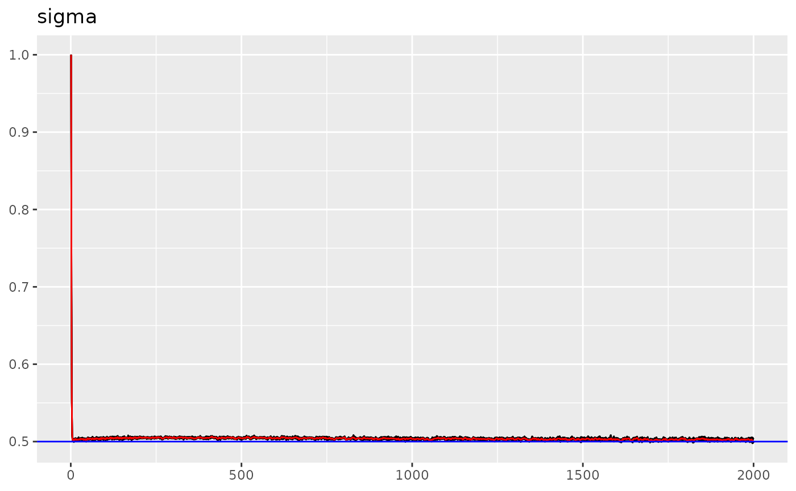
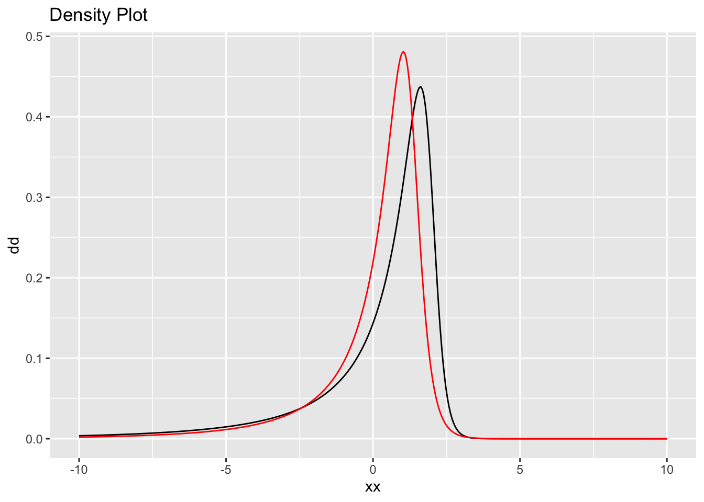
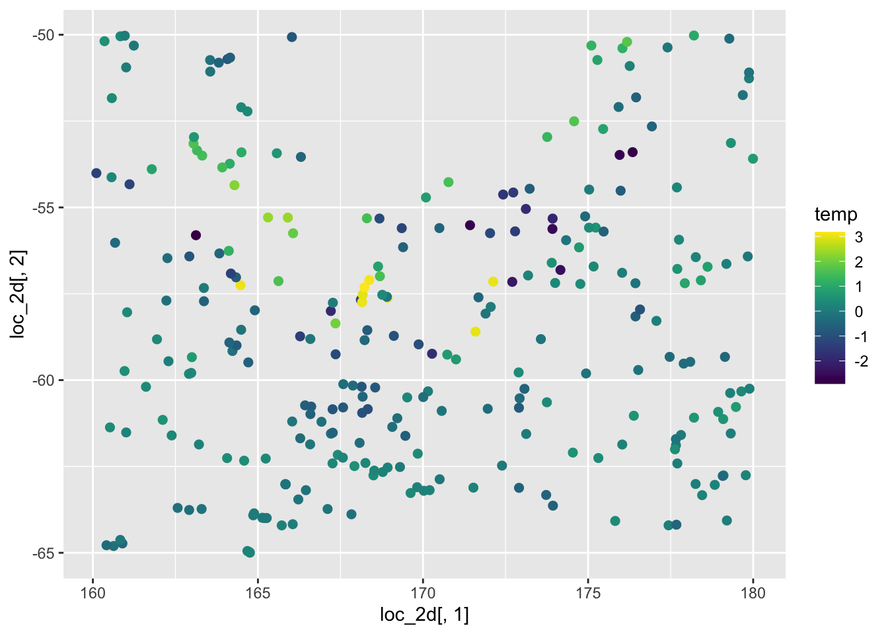
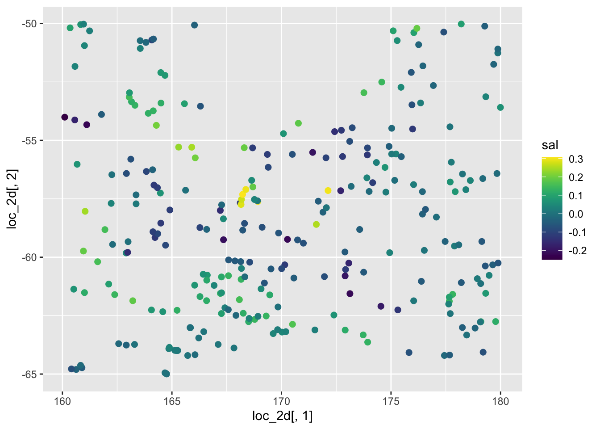
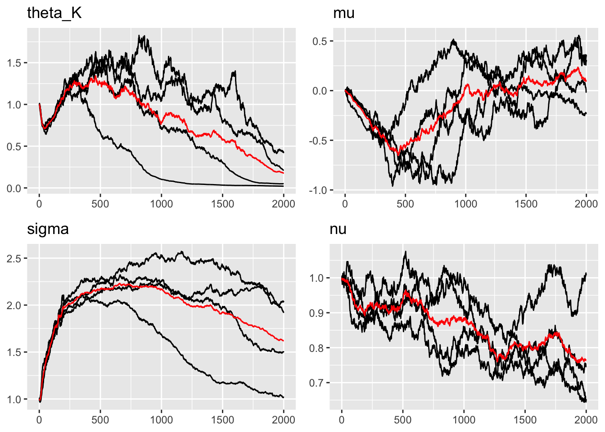
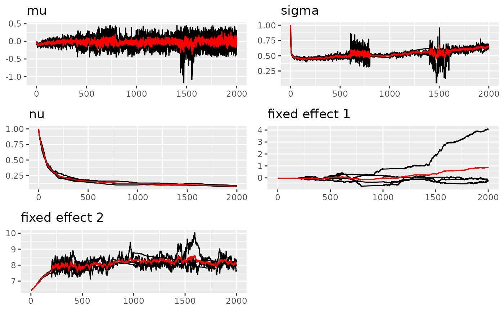

In this vignette, we will introduce the SPDE Matérn model in
ngme2. First we introduce a little about Gaussian
process.
Gaussian processes and random fields provide powerful methods for modeling spatial and spatio-temporal dependence structures. In spatial statistics, particularly in geostatistics, Gaussian fields (GFs) play a fundamental role due to their mathematical tractability and flexibility.
A standard geostatistical model can be expressed as: where:
represents observations at spatial locations
is the number of spatial observations
denotes a Gaussian process with mean function and covariance function
is the number of basis functions in the mean structure
are basis functions (often polynomials or splines)
are coefficients to be estimated
represents measurement error with variance
Among the various covariance functions available for modeling spatial dependence, the Matérn covariance function is particularly valued for its flexibility:
This function is parameterized by:
: the marginal variance, controlling the overall variability of the process
: the spatial scale parameter, inversely related to the range of correlation.
: the smoothness parameter, determining the differentiability of the field
: the Gamma function
: the modified Bessel function of the second kind of order
The Matérn family is particularly useful because:
It includes the exponential covariance () and the Gaussian covariance (as ) as special cases
The parameter directly controls the mean-square differentiability of the process
The effective range (distance at which correlation drops to approximately 0.1) is roughly
Traditional approaches to fitting these models rely on maximum likelihood estimation, which becomes computationally prohibitive for large datasets. The computational complexity typically scales as , making it impractical for modern spatial datasets with thousands or millions of observations.
It is well-known (Whittle, 1963) that a Gaussian process with Matérn covariance function solves the stochastic partial differential equation (SPDE)
$$\begin{equation}\label{spde} (\kappa^2 -\Delta)^{\frac{\alpha}{2}} u = \mathcal{W}\quad \hbox{in } \mathcal{D}, \end{equation}$$ where is the Laplacian operator, is the Gaussian spatial white noise on , and .
Inspired by this relation between Gaussian processes with Matérn covariance functions and solutions of the above SPDE, Lindgren et al. (2011) constructed computationally efficient Gaussian Markov random field approximations of , where the domain is bounded and . The approximate solutions of the SPDE are obtained through a finite element discretization.
In ngme2, we use the matern function to
specify the SPDE Matérn model. For example, we can use the following
code to specify the SPDE Matérn model in 1d case with Gaussian
noise:
f(map = 1:10,
model = "matern",
mesh = fmesher::fm_mesh_1d(1:10),
kappa = 1, # the spatial scale parameter
noise = noise_normal(sigma = 1)
)
#> Model type: Matern
#> kappa = 1
#> Noise type: NORMAL
#> Noise parameters:
#> sigma = 1Then we will describe how to generalize this approach with non-Gaussian noise. Our goal now is to describe the SPDE approach when the noise is non-Gaussian. The motivation for handling non-Gaussian noise comes from the fact that many features cannot not be handled by Gaussian noise. Some of these reasons are:
The idea is to replace the Gaussian white noise in the SPDE by a non-Gaussian white noise : The solution will have Matérn covariance function, but their marginal distributions will be non-Gaussian.
We will consider the same setup. More precisely, we consider $V_n = {\rm span}\{\varphi_1,\ldots,\varphi_n\}$, where are piecewise linear basis functions obtained from a triangulation of and we approximate the solution by , where is written in terms of the basis functions as In the right-hand side we obtain a random vector where the functional is given by By considering to be a type-G Lévy process, we obtain that has a joint distribution that is easy to handle.
We say that a Lévy process is of type G if its increments can be represented as location-scale mixtures: where are parameters, and is independent of , and is a positive infinitely divisible random variable.
Therefore, given a vector of independent stochastic variances (in our case, positive infinitely divisible random variables), we obtain that $$\mathbf{f}|\mathbf{V} \sim N(\gamma + \mu\mathbf{V}, \sigma^2{\rm diag}(\mathbf{V})).$$ So, if we consider, for instance, the non-fractional and non-Gaussian SPDE we obtain that the FEM weights satisfy $$\mathbf{w}|\mathbf{V} \sim N(\mathbf{K}^{-1}(\gamma+\mu\mathbf{V}), \sigma^2\mathbf{K}^{-1}{\rm diag}(\mathbf{V})\mathbf{K}^{-1}),$$ where is the discretization of the differential operator.
In ngme2, we use the matern function to
specify the SPDE Matérn model. For example, we can use the following
code to specify the SPDE Matérn model in 1d case with NIG noise:
f(map = 1:10,
model = "matern",
mesh = fmesher::fm_mesh_1d(1:10),
kappa = 1, # the spatial scale parameter
noise = noise_nig(mu = 0, sigma = 1, nu = 0.5)
)
#> Model type: Matern
#> kappa = 1
#> Noise type: NIG
#> Noise parameters:
#> mu = 0
#> sigma = 1
#> nu = 0.5We first use the simulation function to generate the data.
# define the domain
library(ggplot2)
library(viridis)
#> Loading required package: viridisLite
pl01 <- cbind(c(0, 1, 1, 0, 0) * 10, c(0, 0, 1, 1, 0) * 5)
mesh <- fmesher::fm_mesh_2d(
loc.domain = pl01, cutoff = 0.1,
max.edge = c(0.3, 10)
)
n_obs <- 1000
loc <- cbind(runif(n_obs, 0, 10), runif(n_obs, 0, 5))
# define the simulated model
true_noise <- noise_nig(mu=-2, sigma=1, nu=0.5)
true_model <- f(
map = loc,
model="matern",
theta_K = log(4),
mesh = mesh,
noise = true_noise
)
# simulate the data
W <- simulate(true_model)[[1]]
Y <- W + rnorm(n_obs, sd=0.5)
plot(mesh)
points(loc, col="red", pch=16)
##### Fit the model
out <- ngme(
Y ~ 0 + f(loc,
model="matern",
name="spde",
mesh = mesh,
noise=noise_nig(),
),
data = data.frame(Y = Y),
control_opt = control_opt(
iterations = 2000,
optimizer = precond_sgd(),
solver = "supernodal",
rao_blackwellization = TRUE,
n_parallel_chain = 4,
std_lim = 0.01
)
)
#> Starting estimation...
#>
#> Starting posterior sampling...
#> Posterior sampling done!
#> Note:
#> 1. Use ngme_post_samples(..) to access the posterior samples.
#> 2. Use ngme_result(..) to access different latent models.
out
#> *** Ngme object ***
#>
#> Fixed effects:
#> None
#>
#> Models:
#> $spde
#> Model type: Matern
#> kappa = 2.68
#> Noise type: NIG
#> Noise parameters:
#> mu = -0.882
#> sigma = 0.76
#> nu = 0.391
#>
#> Measurement noise:
#> Noise type: NORMAL
#> Noise parameters:
#> sigma = 0.524
traceplot(out, "spde", hline=c(4, -2, 1, 0.5)) # compare with true parameters
#> Last estimates:
#> $kappa
#> [1] 2.680963
#>
#> $mu
#> [1] -0.8815692
#>
#> $sigma
#> [1] 0.759864
#>
#> $nu
#> [1] 0.3937612
traceplot(out, hline=0.5) 
#> Last estimates:
#> $sigma
#> [1] 0.5235868
# Compare with the true density
plot(true_noise,
out$replicates[[1]]$models[[1]]$noise)
We use the argo_float data to illustrate how to use the
SPDE Matérn model in ngme2.
# 2d example
data(argo_float)
head(argo_float)
#> lat lon sal temp
#> 1 -64.078 175.821 -0.0699508100 0.4100305
#> 2 -63.760 162.917 -0.0320931260 -0.2588680
#> 3 -63.732 163.294 -0.0008063143 -0.1151362
#> 4 -63.700 162.568 -0.0209534220 -0.2378965
#> 5 -63.269 169.623 0.0409914840 0.3375048
#> 6 -63.113 171.526 0.0269408910 0.2145556
# take longitude and latitude to build the mesh
max.edge <- 1
bound.outer <- 5
loc_2d <- unique(cbind(argo_float$lon, argo_float$lat))
# nrow(loc) == nrow(dat) no replicate
argo_mesh <- fmesher::fm_mesh_2d(loc = loc_2d,
# the inner edge and outer edge
max.edge = c(1,5),
cutoff = 0.3,
# offset extension distance inner and outer extenstion
offset = c(max.edge, bound.outer)
)Let’s use the previous argo_float spatial (2d) example.
First we explore the how the data look like:
# tempearture
ggplot(data=argo_float) +
geom_point(aes(
x = loc_2d[, 1], y = loc_2d[, 2],
colour = temp
), size = 2, alpha = 1) +
scale_color_gradientn(colours = viridis(100))
# salinity
ggplot(data=argo_float) +
geom_point(aes(
x = loc_2d[, 1], y = loc_2d[, 2],
colour = sal
), size = 2, alpha = 1) +
scale_color_gradientn(colours = viridis(100))
Next, we specify a model formula, and then fit the model.
formula <- temp ~ sal + f(
loc_2d,
model = "matern",
name = "spde",
mesh=argo_mesh,
noise = noise_nig()
)
out <- ngme(
formula = formula,
family = "nig",
data = argo_float,
control_opt = control_opt(
n_parallel_chain = 4,
iterations = 2000,
seed = 7,
optimizer = precond_sgd(),
solver = "supernodal",
print_check_info = FALSE
)
)
#> Starting estimation...
#>
#> Starting posterior sampling...
#> Posterior sampling done!
#> Note:
#> 1. Use ngme_post_samples(..) to access the posterior samples.
#> 2. Use ngme_result(..) to access different latent models.
out
#> *** Ngme object ***
#>
#> Fixed effects:
#> (Intercept) sal
#> 2.26 8.45
#>
#> Models:
#> $spde
#> Model type: Matern
#> kappa = 0.314
#> Noise type: NIG
#> Noise parameters:
#> mu = 0.113
#> sigma = 1.56
#> nu = 0.749
#>
#> Measurement noise:
#> Noise type: NIG
#> Noise parameters:
#> mu = 0.0697
#> sigma = 0.677
#> nu = 0.0638
#>
#>
#> Number of replicates is 1
traceplot(out, "spde")
#> Last estimates:
#> $kappa
#> [1] 0.3707417
#>
#> $mu
#> [1] 0.1020974
#>
#> $sigma
#> [1] 1.621006
#>
#> $nu
#> [1] 0.7633703
traceplot(out)
#> Last estimates:
#> $mu
#> [1] -0.1461855
#>
#> $sigma
#> [1] 0.6923882
#>
#> $nu
#> [1] 0.06612474
#>
#> $`fixed effect 1`
#> [1] 2.239989
#>
#> $`fixed effect 2`
#> [1] 8.436739